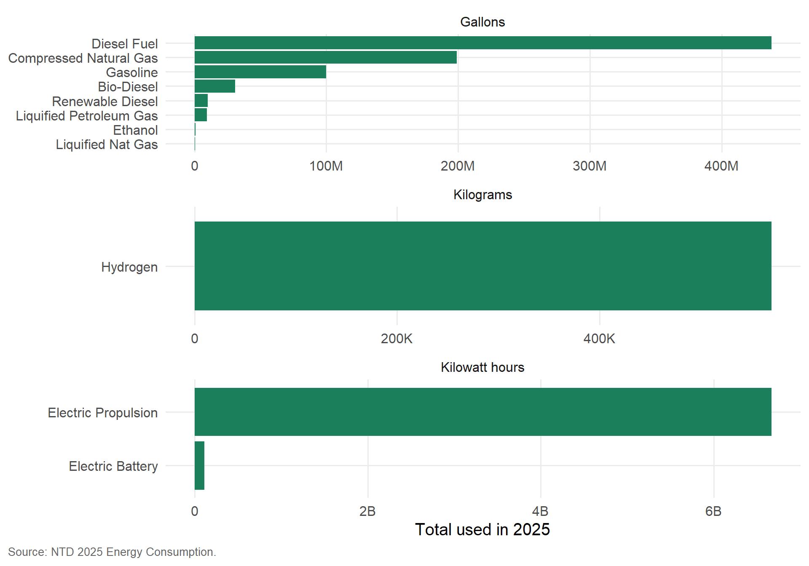
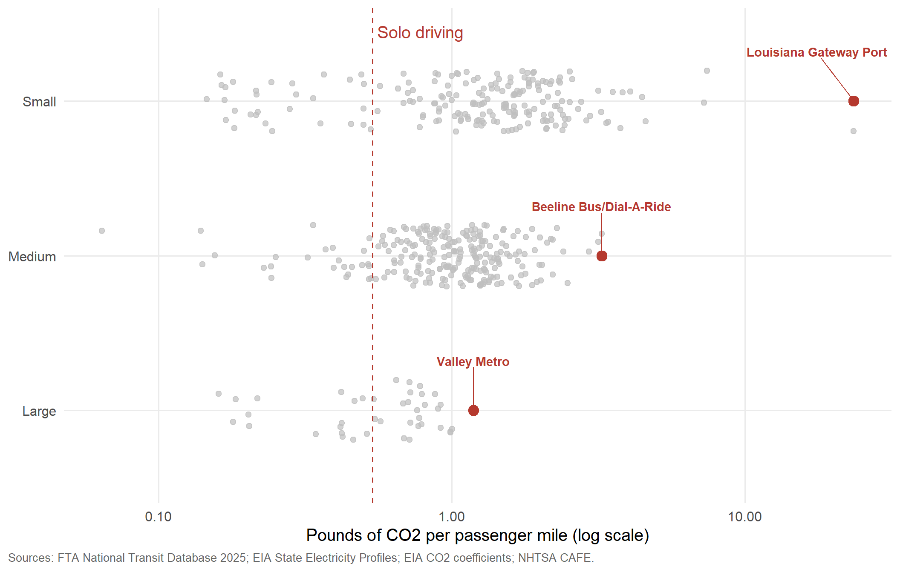
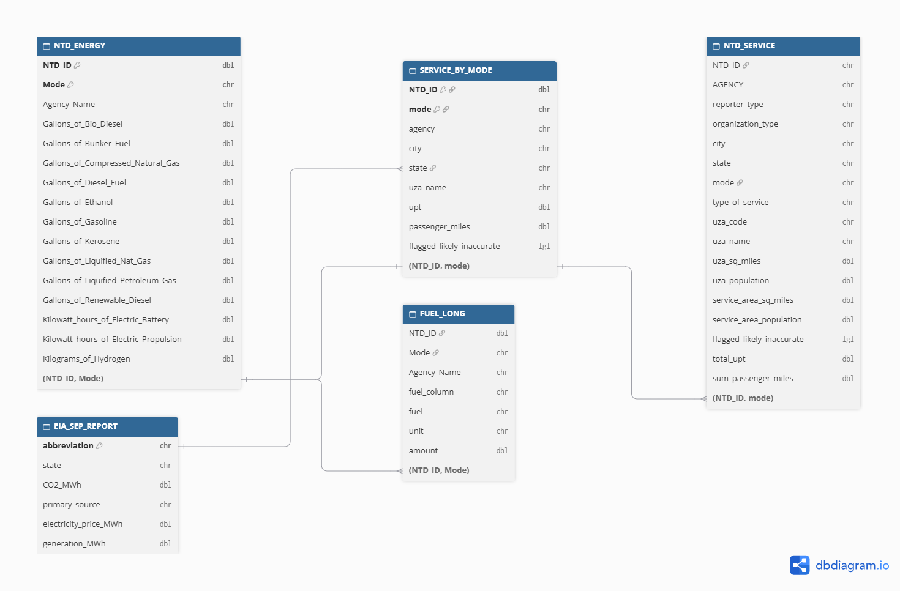

load_ntd_energy <-function(){library(readxl)library(httr2)library(tidyverse)library(fs) DATA_DIR <- fs::path("data", "mp02") fs::dir_create(DATA_DIR, recurse=TRUE) NTD_ENERGY_FILE <- fs::path(DATA_DIR, "2025_ntd_energy.xlsx")if(!fs::file_exists(NTD_ENERGY_FILE)){library(httr2)request("https://www.transit.dot.gov/") |>req_url_path("sites","fta.dot.gov","files","2026-09","2025 Energy Consumption_260806.xlsx") |>req_headers(`User-Agent`="Mozilla/5.0 (Macintosh; Intel Mac OS X 10.15; rv:149.0) Gecko/20100101 Firefox/149.0") |>req_perform(NTD_ENERGY_FILE) }if(file.info(NTD_ENERGY_FILE)$size <1e4){cat("I was unable to download the NTD Energy File. Please try again.\n")stop("Download failed. Please delete the corrupted file by running `unlink('data/mp02/2025_ntd_energy.xlsx')` and try again.") } to_numeric_fill_0 <-function(x){ x <-if_else(x =="-", NA, x)replace_na(as.numeric(x), 0) }read_excel(NTD_ENERGY_FILE) |>select(-c(`Reporter Type`, `Reporting Module`, `Gallons of Other Fuel`, `Other Fuel Description`)) |>mutate(across(-c(`Agency Name`, `Mode`,`TOS`), to_numeric_fill_0)) |>group_by(`NTD ID`, `Mode`, `Agency Name`) |>summarize(across(where(is.numeric), sum), .groups ="keep") |>mutate(ENERGY =sum(c_across(c(where(is.numeric))))) |>filter(ENERGY >0) |>select(-ENERGY) |>ungroup()}NTD_ENERGY <-load_ntd_energy()
Transit Service Provided
Show the code
load_ntd_service <-function(){library(httr2)library(tidyverse)library(fs) DATA_DIR <- fs::path("data", "mp02") fs::dir_create(DATA_DIR, recurse=TRUE) NTD_SERVICE_FILE <- fs::path(DATA_DIR, "2025_ntd_service.csv")if(!fs::file_exists(NTD_SERVICE_FILE)){library(httr2)request("https://data.transportation.gov/resource/4fir-qbim.csv") |>req_url_query(`$query`=paste("SELECT `_5_digit_ntd_id` AS `NTD_ID`", "`max_agency` AS `AGENCY`","`max_reporter_type` AS `reporter_type`","`max_organization_type` AS `organization_type`","`max_city` AS `city`","`max_state` AS `state`","`mode`","`type_of_service`","`max_primary_uza_code` as `uza_code`","`max_primary_uza_name` as `uza_name`","`max_primary_uza_area_sq_miles` as `uza_sq_miles`","`max_primary_uza_population` as `uza_population`","`max_service_area_sq_miles` as `service_area_sq_miles`","`max_service_area_population` as `service_area_population`","`questionable_record` as `flagged_likely_inaccurate`","`sum_unlinked_passenger_trips_upt` as `total_upt`","`sum_passenger_miles` WHERE caseless_one_of(`report_year`, '2025') limit 50000", sep=",")) |>req_headers(`User-Agent`="Mozilla/5.0 (Macintosh; Intel Mac OS X 10.15; rv:149.0) Gecko/20100101 Firefox/149.0") |>req_perform(NTD_SERVICE_FILE) }if(file.info(NTD_SERVICE_FILE)$size <1e4){cat("I was unable to download the NTD Service File. Please try again.\n")stop("Download failed. Please delete the corrupted file by running `unlink('data/mp02/2025_ntd_service.xlsx')` and try again.") }read_csv(NTD_SERVICE_FILE) |>mutate(flagged_likely_inaccurate =!is.na(flagged_likely_inaccurate))}NTD_SERVICE <-load_ntd_service()
Visual of amounts of each type of fuel across US public transit
Show the code
# Gallons, kWh, and kilograms are not comparable, so each unit gets a panel.FUEL_TOTALS |>filter(total >0) |>ggplot(aes(x = total, y =fct_reorder(fuel, total))) +geom_col(fill = TIER_COLOR) +facet_wrap(~unit, scales ="free", ncol =1) +scale_x_continuous(labels =label_number(scale_cut =cut_short_scale())) +labs(x ="Total used in 2025",y =NULL,caption ="Source: NTD 2025 Energy Consumption." ) +theme_gta()

Q3.
The least commonly used fuel source for US public transit is Liquified Nat Gas
# CHECK: run `NTD_SERVICE |> distinct(AGENCY, city) |># filter(str_detect(AGENCY, "MTA"))` to confirm these names on the real data.NYC_CITIES <-c("New York City", "New York", "Brooklyn", "Staten Island")mta_nyc <- SERVICE_BY_MODE |>filter(str_detect(agency, "MTA New York City Transit")) |>summarize(avg_trip =sum(passenger_miles) /sum(upt))longest_nyc_trip <- SERVICE_BY_MODE |>filter(city %in% NYC_CITIES, upt >0) |>mutate(avg_trip = passenger_miles / upt) |>slice_max(avg_trip, n =1, with_ties =FALSE)states_missing <-setdiff(state.abb, SERVICE_BY_MODE$state)missing_names <- state.name[state.abb %in% states_missing]
Q2.
Average Trip length of a trip on MTA MYC is 3.18 miles.
Q3.
The Metro-North Commuter Railroad Company, dba: MTA Metro-North Railroad, has the longest average trip length which is 24.3 miles per trip.
Q4.
States with the fewest miled traveled by Public Transit
There are 1,137 agency-mode pairs that used any fuel or electricity in 2025 after editing for renewable diesel. There are 0 non matching energy rows in the service table. Furthermore there are 1,131 left after the Joins due to 6 being dropped since they had no electricity data.wh
Task 6: Normalizing Emissions
Buckets of small, medium and Large were formed by these trips per year values. SMALL is 100K to 1 million, Medium is 1 million to 20 million and Large is Over 20 million. UPT median is higher in emissions due to trips averaging more than one mile
AGENCY_EFFICIENCY |>slice_max(lb_per_mile, n =1, by = size_tier, with_ties =FALSE) |>mutate(label =str_wrap(str_remove(agency, ".*dba: "), 24)) |>plot_award_strip(ALERT_COLOR, NULL)

Press Release
2025 Green Transit Awards Recognize America’s Most Low Emission Public Transportation Systems
November 6 2026
Public transportation is often considered a greener alternative to driving, however not every transit system is pulling its environmental weight. Some are true eco warriors, while some can be worse than just driving a car.
A new analysis was released of 2025 data from the Federal Transit Administration and U.S. Energy Information Administration which identifies the most carbon-efficient public transit agencies based on carbon dioxide CO₂ emissions per passenger mile.
Greenest Transit Agency Awards
Three agencies were recognized based on annual ridership. Some agencies move people. These three move a lot of people.
Small Agency: Adirondack Trailways from the upstate NY produced 0.146 pounds of CO₂ per passenger mile, approximately 90% below its category median.
Medium Agency: Seattle Center Monorail from Washington produced 0.064 pounds of CO₂ per passenger mile, approximately 94% below its category median.
Large Agency: SF BART from California produced 0.160 pounds of CO₂ per passenger mile, approximately 77% below its category median.
Turns out a monorail from 1962 is out-greening most of the country.
Greenest Transportation Mode Award
The winner is Vanpools! Yes, really.
With a median of 0.18 pounds of CO₂ per passenger mile. Heavy rail and light rail followed at 0.37 and 0.44 pounds, respectively. Driving alone produces an estimated 0.54 pounds of CO₂ per mile under the study’s assumptions. Vanpools generate approximately 66% fewer emissions, proving that awkward conversations with coworkers might actually be worth it!
Dirtiest Agency Award
Who is the worst offender of them all? Louisiana Gateway Port. This CO2 guzzler consumed on average 23.50 Lb of CO2 per passenger mile, nearly 44 times solo driving.
Louisiana Gateway Port has earned the title of Employee of the Month of Climate Change.
About the Study
The analysis combines 2025 transit energy consumption and passenger service data from the FTA National Transit Database with state electricity emissions data from the EIA.
Small Category (100,000 to 1 million annual trips), Medium (1 million to 20 million annual trips), Large (Over 20 million!)
Media Supplements: Because apparently, handing out awards requires evidence. Three additional charts back up our winners.
ERD Diagram:

Data relationship diagram, made with dbdiagram.io
NoteAI Usage Statement
Claude was the main AI tool used to help write the code in this project, but all non-code text, including the funny jokes, was generated and edited by me. Additionally, Claude was used to provide additional background information on the topic, explaining steps listed in the project, helping explain the main reports, the structure of the data and to brainstorm ideas for the final open ended section. ERD Analysis design came from working with Claude. The award metrics, the renewable diesel fix, the DC-to-Maryland rule, the solo-driving benchmark and the size tier cutoffs where all brainstormed edits using Claude. Finally, Claude reviewed renders and pointed out typos and factual errors.